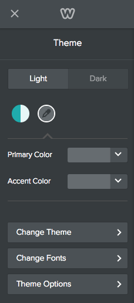

<div class="post-header">
    <h1 class="post-title-main" id="ds_themes_palette.html">Create a Color Palette</h1>
</div>

<div class="post-content">

    
    <div class="summary">You can create a color palette for your theme that allows the user to select a primary and an accent color for the site.</div>
    
    <h2 id="about-color-palettes">About Color Palettes</h2>

<p>Color palettes allow you to provide pre-defined primary and accent color schemes for your theme, but also allow the user to create their own. You determine where the primary and accent colors are used (or variations of them), and provide default values for those colors. Users can’t change where they are used, but can change the colors that are used.</p>

<p>For example, this theme offers two default palettes - a blue one and a pink one. On the page being shown, the primary color is used for the title and as a color overlay on the image.</p>
<figure class="post-content__figure">
	

	

	

	
		<figcaption>The blue palette colors the title and the color overlay</figcaption>
	</figure>

<p>Here’s the same theme using the pink palette. Notice where the primary color is used hasn’t changed, but the color itself has.</p>
<figure class="post-content__figure">
	

	

	

	
		<figcaption>Now the primary color of dark rose is used in place of the blue</figcaption>
	</figure>

<p>Users can select their own primary and accent colors using the eyderopper.</p>
<figure class="post-content__figure">
	

	

	

	
		<figcaption>Users select colors by clicking the eyedropper and then using the dropdowns to choose colors</figcaption>
	</figure>

<p>You create palettes by defining variables in the theme’s manifest that are used in the LESS stylesheets.</p>

<div class="Notice type_info" role="alert">
	<b>Note:</b> Color palettes are only supported using LESS. You cannot use color palettes with CSS.
</div>

<h2 id="create-a-color-palette">Create a Color Palette</h2>

<p>You create a color palette by turning on the feature and then optionally defining colors in one or more palettes.</p>

<p>To allow a palette for your theme, add the color-support element to the theme’s manifest and determine if you’ll support a primary and an accent color or just a primary color.</p>

<figure class="highlight"><pre><code class="language-json" data-lang="json"><span class="err"></span><span class="w">
</span><span class="s2">"color-support"</span><span class="err">:</span><span class="w"> </span><span class="p">{</span><span class="w">
    </span><span class="nt">"primary"</span><span class="p">:</span><span class="w"> </span><span class="kc">true</span><span class="p">,</span><span class="w">
    </span><span class="nt">"accent"</span><span class="p">:</span><span class="w"> </span><span class="kc">true</span><span class="w">
</span><span class="p">}</span></code></pre></figure>

<p>Adding this support creates the dropper icon that allows the user to create their own palette. Supporting just a primary color means the user can only choose one color. Supporting both allows the user to choose a color for both. This image shows support for just a primary color:</p>
<figure class="post-content__figure">
	

	

	

	
		<figcaption>You can define just a primary color in your palette</figcaption>
	</figure>

<p>​This theme allows both a primary and accent color:</p>
<figure class="post-content__figure">
	

	

	

	
		<figcaption>Or a primary and accent color can be configured</figcaption>
	</figure>

<p>Optionally create a default palette by defining a primary and/or an accent color within an array of palette colors (a palette must be in an array even if there is only one).</p>

<figure class="highlight"><pre><code class="language-json" data-lang="json"><span class="err"></span><span class="w">
</span><span class="s2">"color-presets"</span><span class="err">:</span><span class="w"> </span><span class="p">[</span><span class="w">
    </span><span class="p">{</span><span class="w">
        </span><span class="nt">"primary"</span><span class="p">:</span><span class="w"> </span><span class="s2">"#171b6d"</span><span class="p">,</span><span class="w">
        </span><span class="nt">"accent"</span><span class="p">:</span><span class="w"> </span><span class="s2">"#ad8d0c"</span><span class="w">
    </span><span class="p">}</span><span class="w">
</span><span class="p">]</span><span class="err">,</span></code></pre></figure>

<p>You can create as many palettes in the array as you’d like.</p>

<p></p>
<figure class="highlight"><pre><code class="language-json" data-lang="json"><span class="s2">"color-presets"</span><span class="err">:</span><span class="w"> </span><span class="p">[</span><span class="w">
    </span><span class="p">{</span><span class="w">
        </span><span class="nt">"primary"</span><span class="p">:</span><span class="w"> </span><span class="s2">"#171b6d"</span><span class="p">,</span><span class="w">
        </span><span class="nt">"accent"</span><span class="p">:</span><span class="w"> </span><span class="s2">"#ad8d0c"</span><span class="w">
    </span><span class="p">},</span><span class="w">
    </span><span class="p">{</span><span class="w">
        </span><span class="nt">"primary"</span><span class="p">:</span><span class="w"> </span><span class="s2">"#bc3089"</span><span class="p">,</span><span class="w">
        </span><span class="nt">"accent"</span><span class="p">:</span><span class="w"> </span><span class="s2">"#a0d9e2"</span><span class="w">
    </span><span class="p">}</span><span class="w">
</span><span class="p">]</span><span class="err">,</span></code></pre></figure>

<p>Once the palette(s) are defined, they display in the sidebar where the user can choose one or create their own. ​If you don’t create a palette, (but do add the color-support element), then only the eyedropper icon displays, allowing the user to create their own palette.</p>

<h2 id="using-color-palettes-in-less">Using Color Palettes in LESS</h2>

<p>Once you define a palette(s), then you determine where those colors are used in the theme. You use LESS variables in your stylesheet to represent the colors. That way, when the user selects one of the palettes, or creates their own, the right color is used:</p>

<ul>
  <li><strong>Primary color</strong>: <code class="highlighter-rouge">@site-primary-color</code></li>
  <li><strong>Accent color</strong>: <code class="highlighter-rouge">@site-accent-color</code></li>
</ul>

<p>​For example, if you want titles to use the primary color and buttons to use the accent color, you might add the following to your <code class="highlighter-rouge">main.less</code> file.</p>

<p></p>
<figure class="highlight"><pre><code class="language-css" data-lang="css"><span class="nt">h1</span> <span class="p">{</span>
    <span class="nl">color</span><span class="p">:</span> <span class="err">@</span><span class="n">site-primary-color</span><span class="p">;</span>
<span class="err">.</span> <span class="err">.</span> <span class="err">.</span>
<span class="p">}</span>

<span class="nc">.wsite-button</span> <span class="p">{</span>
    <span class="nl">background-color</span><span class="p">:</span> <span class="err">@</span><span class="n">site-accent-color</span><span class="p">;</span>
<span class="err">.</span> <span class="err">.</span> <span class="err">.</span>
<span class="p">}</span></code></pre></figure>

<p>You can use LESS color operation functions to provide variations on the primary and accent colors, while still keeping within the palette. For example, you might set <code class="highlighter-rouge">h2</code> to be a slightly lighter shade of the primary color using the <code class="highlighter-rouge">tint</code> function:</p>

<p></p>
<figure class="highlight"><pre><code class="language-css" data-lang="css"><span class="nt">h2</span> <span class="p">{</span>
    <span class="nl">color</span><span class="p">:</span> <span class="n">tint</span><span class="p">(</span><span class="err">@</span><span class="n">site-primary-color</span><span class="p">,</span> <span class="m">50%</span><span class="p">);</span>
<span class="err">.</span> <span class="err">.</span> <span class="err">.</span>
<span class="p">}</span></code></pre></figure>

<p>You can find more about using LESS color operations functions <a href="http://lesscss.org/functions/#color-operations">here</a>.</p>

<p>​​To provide more color flexibility for your palettes, you can create a dark and light version. Follow the procedures for creating <a href="ds_themes_variations.html">color variations</a>, using the palette variables in versions’ LESS file. Name the light version <code class="highlighter-rouge">variables_light.less</code> and the dark <code class="highlighter-rouge">variables_dark.less</code>.</p>

</div>
